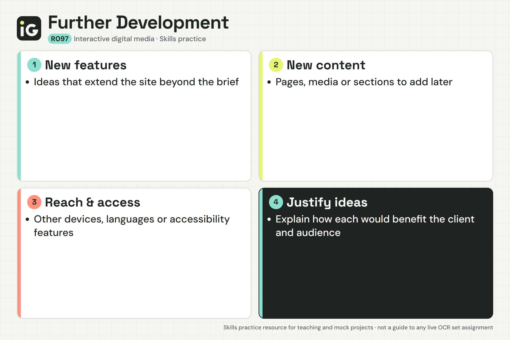

New features
- New interactive elements

Explain how your website could be developed further.
After you have improved your website, you must suggest further developments. These are ideas you did not have time to implement but would make the website even better in the future. This is written in your project log and does not require you to actually build the features.
These ideas must be realistic and relevant to your website. Avoid vague statements like "make it better" — be specific about what would be added and why.
Use this checklist to make sure you can cover every part of this topic.